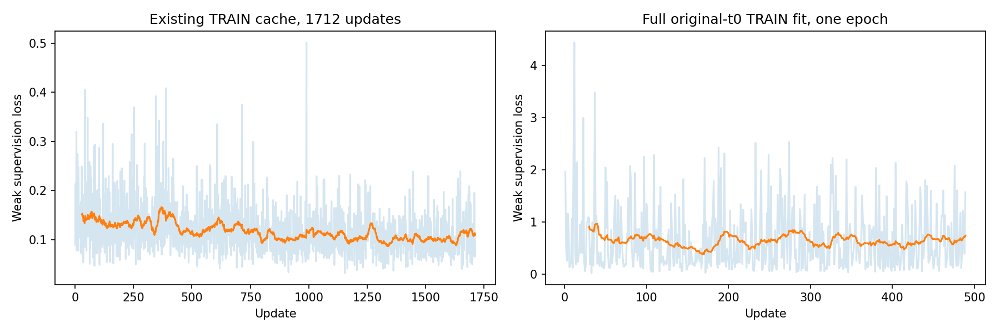
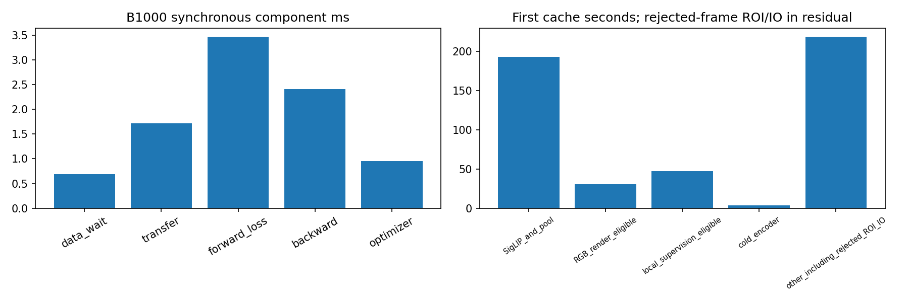
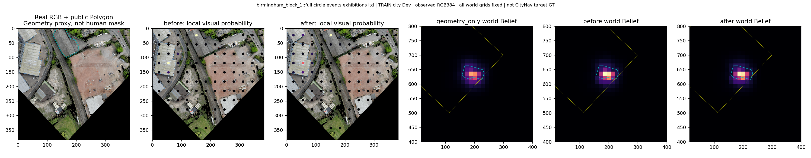
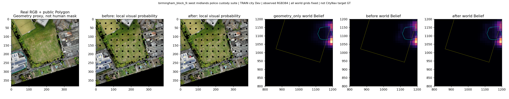
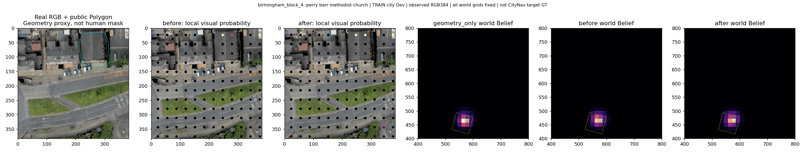
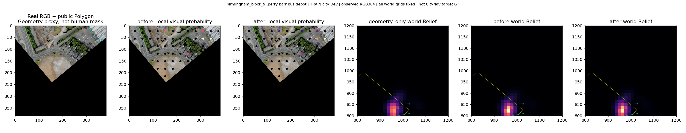
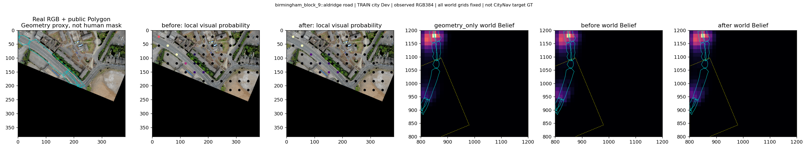
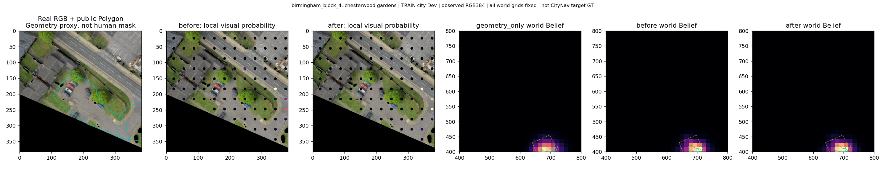
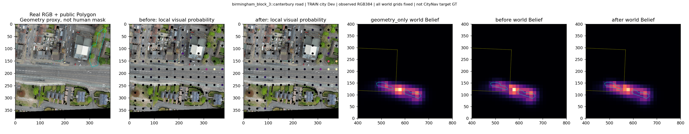
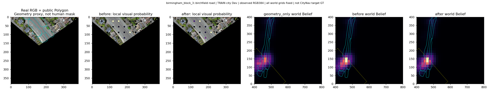

真实训练与效率Pilot
公开Polygon弱监督；非原始CityNav任务SR结论。模型只训练PGVB视觉Head。
中文报告

birmingham_block_1::full circle events exhibitions ltd

birmingham_block_9::west midlands police custody suite

birmingham_block_4::perry barr methodist church

birmingham_block_9::perry barr bus depot

birmingham_block_9::aldridge road

birmingham_block_4::chesterwood gardens

birmingham_block_3::canterbury road

birmingham_block_3::birchfield road
